Change analysis for Sweden for PRIMAP-hist v2.6_final compared to
v2.5.1_final
Overview over
emissions by sector and gas
The following figures show the aggregate national total emissions
excluding LULUCF AR6GWP100 for the country reported priority scenario.
The dotted linesshow the v2.5.1_final data.
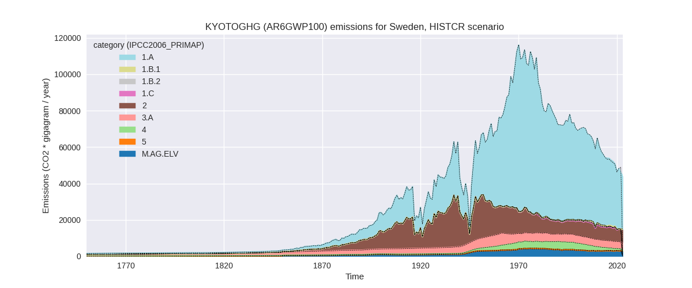
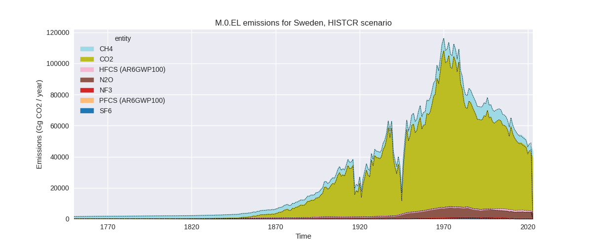
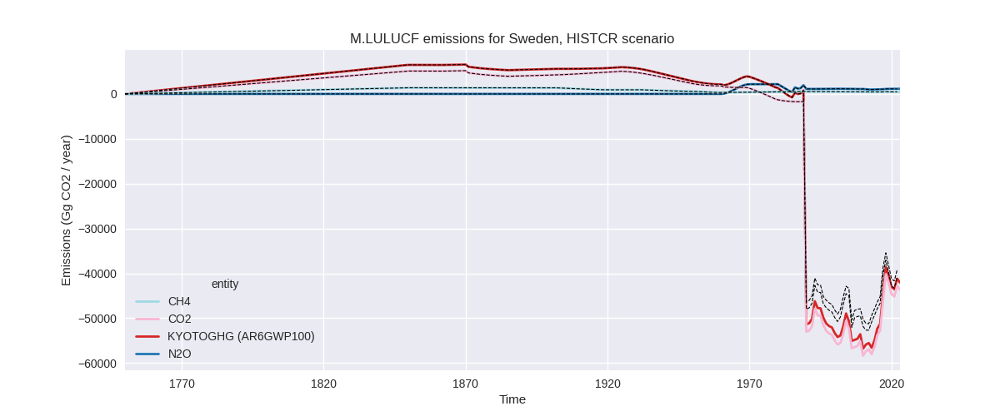
The following figures show the aggregate national total emissions
excluding LULUCF AR6GWP100 for the third party priority scenario. The
dotted linesshow the v2.5.1_final data.
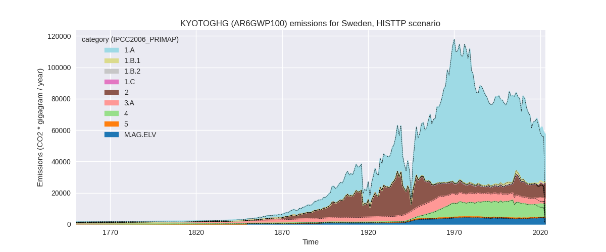
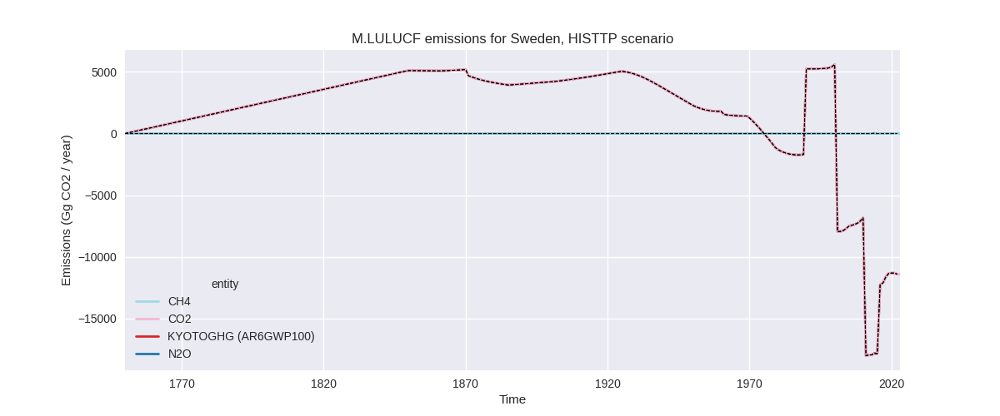
Overview over changes
In the country reported priority scenario we have the following
changes for aggregate Kyoto GHG and national total emissions excluding
LULUCF (M.0.EL):
- Emissions in 2022 have changed by -6.3%% (-3067.49 Gg CO2 / year)
- Emissions in 1990-2022 have changed by -0.3%% (-214.98 Gg CO2 / year)
In the third party priority scenario we have the following changes
for aggregate Kyoto GHG and national total emissions excluding LULUCF
(M.0.EL):
- Emissions in 2022 have changed by 4.2%% (2343.97 Gg CO2 / year)
- Emissions in 1990-2022 have changed by 0.5%% (401.68 Gg CO2 / year)
Most
important changes per scenario and time frame
In the country reported priority scenario the
following sector-gas combinations have the highest absolute impact on
national total KyotoGHG (AR6GWP100) emissions in 2022
(top 5):
- 1: 1.A, CO2 with -3017.64 Gg CO2 / year (-9.1%)
- 2: M.AG.ELV, N2O with -238.03 Gg CO2 / year (-8.3%)
- 3: 2, CO2 with 227.06 Gg CO2 / year (4.0%)
- 4: 3.A, CH4 with 53.37 Gg CO2 / year (1.5%)
- 5: 2, HFCS (AR6GWP100) with -43.73 Gg CO2 / year (-4.4%)
In the country reported priority scenario the
following sector-gas combinations have the highest absolute impact on
national total KyotoGHG (AR6GWP100) emissions in
1990-2022 (top 5):
- 1: M.AG.ELV, N2O with -255.72 Gg CO2 / year (-8.7%)
- 2: 1.B.2, CO2 with 113.55 Gg CO2 / year (28.7%)
- 3: 1.A, CO2 with -94.32 Gg CO2 / year (-0.2%)
- 4: 3.A, CH4 with 16.25 Gg CO2 / year (0.4%)
- 5: 2, HFCS (AR6GWP100) with -11.15 Gg CO2 / year (-1.3%)
In the third party priority scenario the following
sector-gas combinations have the highest absolute impact on national
total KyotoGHG (AR6GWP100) emissions in 2022 (top
5):
- 1: 4, CH4 with 1896.83 Gg CO2 / year (31.0%)
- 2: 1.A, CO2 with 451.39 Gg CO2 / year (1.5%)
- 3: 2, PFCS (AR6GWP100) with -34.90 Gg CO2 / year (-28.0%)
- 4: 5, N2O with 33.85 Gg CO2 / year (15.6%)
- 5: 2, HFCS (AR6GWP100) with -33.80 Gg CO2 / year (-3.4%)
In the third party priority scenario the following
sector-gas combinations have the highest absolute impact on national
total KyotoGHG (AR6GWP100) emissions in 1990-2022 (top
5):
- 1: 4, CH4 with 260.71 Gg CO2 / year (2.9%)
- 2: 1.A, CO2 with 131.05 Gg CO2 / year (0.3%)
- 3: 5, N2O with 5.44 Gg CO2 / year (1.4%)
- 4: 4, CO2 with 1.88 Gg CO2 / year (1.8%)
- 5: 4, N2O with 1.17 Gg CO2 / year (0.7%)
Notes on data changes
Here we list notes explaining important emissions changes for the
country. ’' means that the following text only applies to the TP time
series, while means that it only applies to the CR scenario. Otherwise
the note applies to both scenarios.
- We have included EEA2024 data for Sweden.
- The 9% reduction in 2022 energy CO2 emissions comes from the new EEA
data which shows declining emissions while EI2023 shows an emission
increase for 2022. EI2024 also shows an emissions decline, but due to
changes for earlier years and the harmonization to CDIAC data 2022
emissions are decreased slightly.
- 1.B.2, CO2 Cumulative emissions in the CR scenario are higher
because EEA data is much higher for 2015 - 2021 than CRF2023.
- N2O emissions from agriculture are over 8% lower cumulatively and in
2022 because they are lower in EEA2024 than in CRF2023.
- Changes in sectors 4 and 5 in the TP scenario are due to the removal
of FAOSTAT data.
- 2022 data changes for energy CO2 in the TP scenario are due to
updated 2022 values in the new input data.
Changes by sector and gas
For each scenario and time frame the changes are displayed for all
individual sectors and all individual gases. In the sector plot we use
aggregate Kyoto GHGs in AR6GWP100. In the gas plot we usenational total
emissions without LULUCF. ## country reported scenario
2022
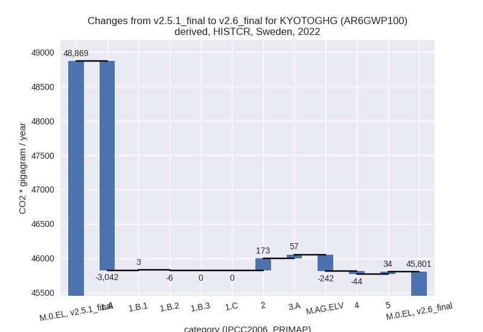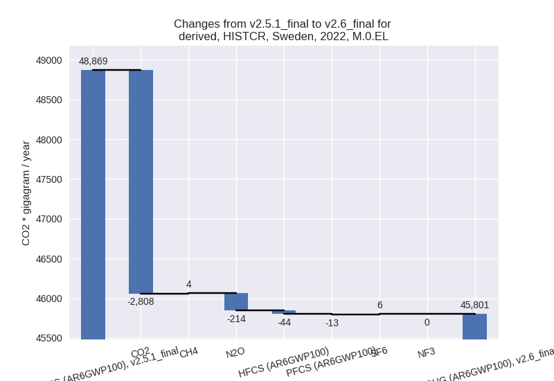
1990-2022
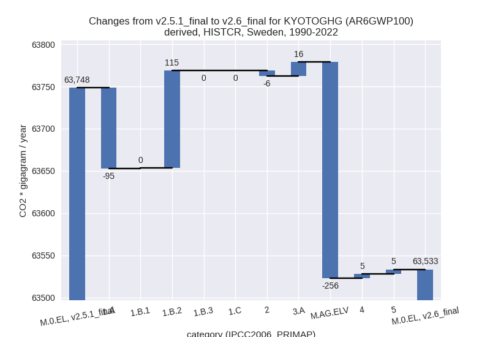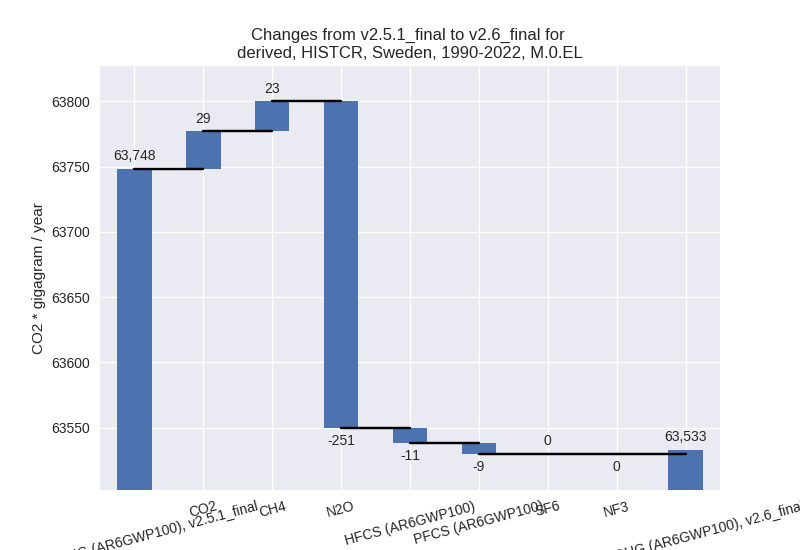
third party scenario
2022
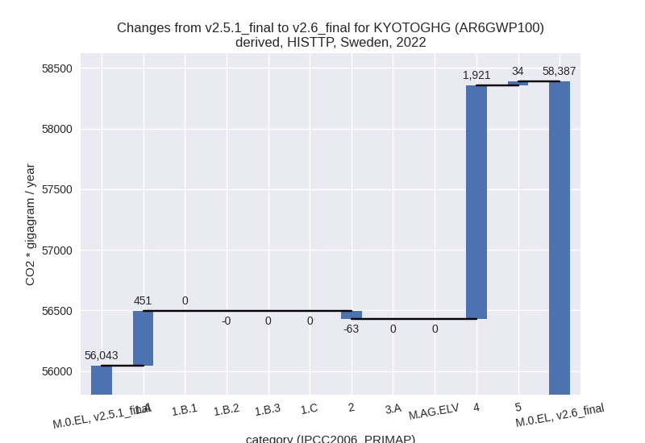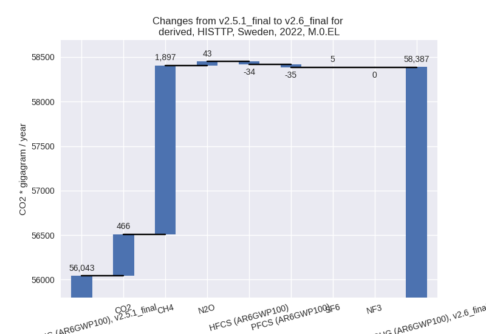
1990-2022
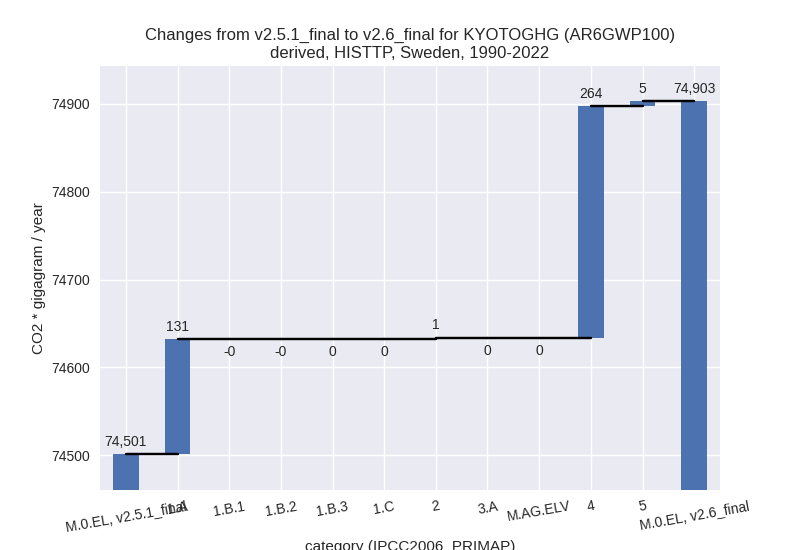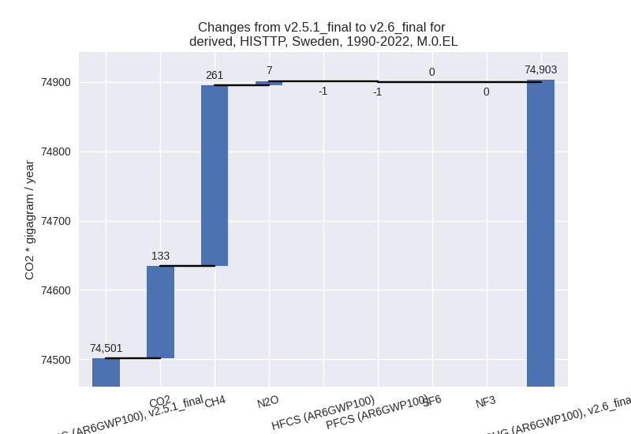
Detailed changes for the
scenarios:
country reported scenario
(HISTCR):
Most important changes
per time frame
For 2022 the following sector-gas combinations have
the highest absolute impact on national total KyotoGHG (AR6GWP100)
emissions in 2022 (top 5):
- 1: 1.A, CO2 with -3017.64 Gg CO2 / year (-9.1%)
- 2: M.AG.ELV, N2O with -238.03 Gg CO2 / year (-8.3%)
- 3: 2, CO2 with 227.06 Gg CO2 / year (4.0%)
- 4: 3.A, CH4 with 53.37 Gg CO2 / year (1.5%)
- 5: 2, HFCS (AR6GWP100) with -43.73 Gg CO2 / year (-4.4%)
For 1990-2022 the following sector-gas combinations
have the highest absolute impact on national total KyotoGHG (AR6GWP100)
emissions in 1990-2022 (top 5):
- 1: M.AG.ELV, N2O with -255.72 Gg CO2 / year (-8.7%)
- 2: 1.B.2, CO2 with 113.55 Gg CO2 / year (28.7%)
- 3: 1.A, CO2 with -94.32 Gg CO2 / year (-0.2%)
- 4: 3.A, CH4 with 16.25 Gg CO2 / year (0.4%)
- 5: 2, HFCS (AR6GWP100) with -11.15 Gg CO2 / year (-1.3%)
Changes in the main sectors for aggregate KyotoGHG (AR6GWP100)
are
- 1: Total sectoral emissions in 2022 are 30883.23 Gg
CO2 / year which is 67.4% of M.0.EL emissions. 2022 Emissions have
changed by -9.0% (-3045.82 Gg CO2 /
year). 1990-2022 Emissions have changed by 0.0% (20.30 Gg CO2 / year). For 2022 the
changes per gas
are:
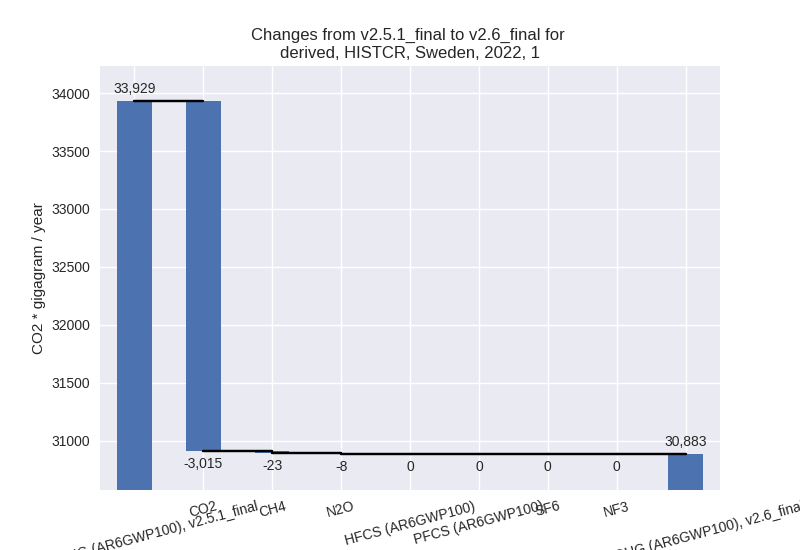
The changes come from the following subsectors:
- 1.A: Total sectoral emissions in 2022 are 30833.79
Gg CO2 / year which is 99.8% of category 1 emissions. 2022 Emissions
have changed by -9.0% (-3042.44 Gg
CO2 / year). 1990-2022 Emissions have changed by -0.2% (-95.12 Gg CO2 / year). For 2022 the
changes per gas
are:
There is no subsector information available in PRIMAP-hist.
- 1.B.1: Total sectoral emissions in 2022 are 11.77
Gg CO2 / year which is 0.0% of category 1 emissions. 2022 Emissions have
changed by 29.4% (2.67 Gg CO2 /
year). 1990-2022 Emissions have changed by 1.2% (0.08 Gg CO2 / year). For 2022 the
changes per gas
are:
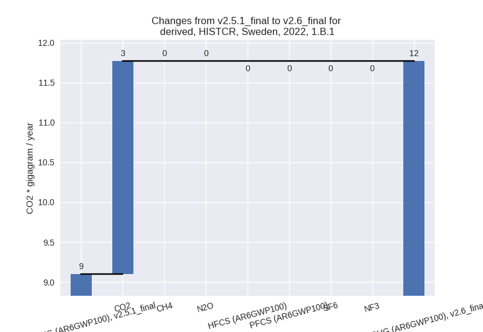
There is no subsector information available in PRIMAP-hist.
- 1.B.2: Total sectoral emissions in 2022 are 37.67
Gg CO2 / year which is 0.1% of category 1 emissions. 2022 Emissions have
changed by -13.8% (-6.04 Gg CO2 /
year). 1990-2022 Emissions have changed by 24.2% (115.33 Gg CO2 / year). For 2022 the
changes per gas
are:
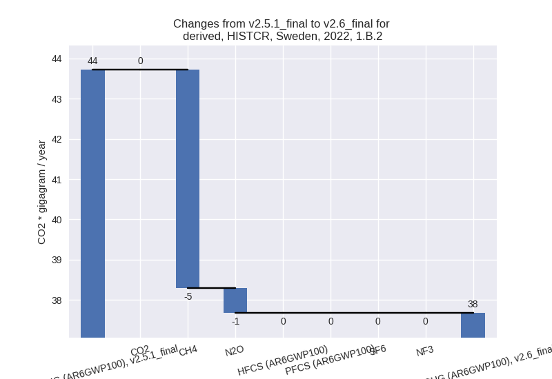
For 1990-2022 the changes per gas
are:
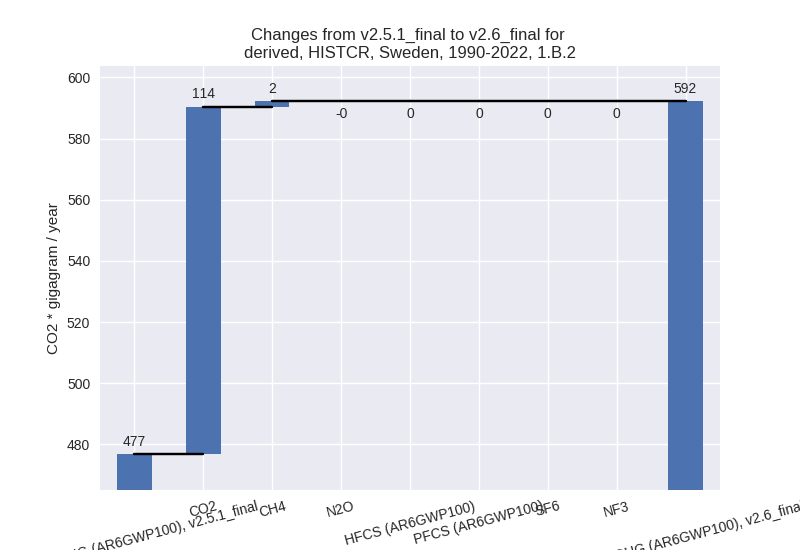
There is no subsector information available in PRIMAP-hist.
- 2: Total sectoral emissions in 2022 are 7135.52 Gg
CO2 / year which is 15.6% of M.0.EL emissions. 2022 Emissions have
changed by 2.5% (173.11 Gg CO2 /
year). 1990-2022 Emissions have changed by -0.1% (-6.15 Gg CO2 / year). For 2022 the
changes per gas
are:
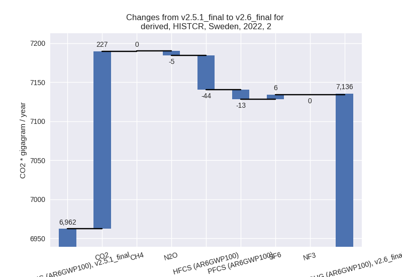
- M.AG: Total sectoral emissions in 2022 are 6583.68
Gg CO2 / year which is 14.4% of M.0.EL emissions. 2022 Emissions have
changed by -2.7% (-185.08 Gg CO2 /
year). 1990-2022 Emissions have changed by -3.4% (-239.48 Gg CO2 / year). For 2022
the changes per gas
are:
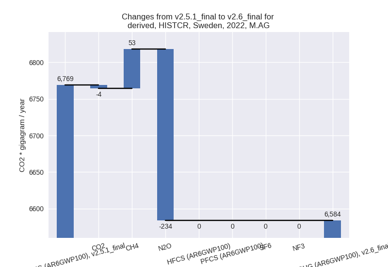
For 1990-2022 the changes per gas
are:
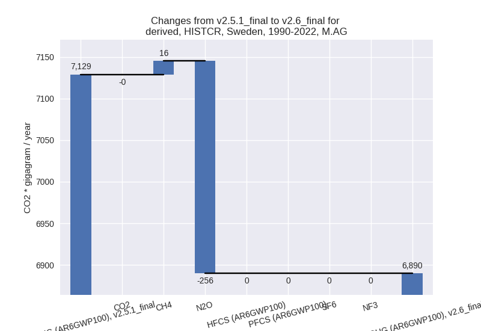
The changes come from the following subsectors:
- 3.A: Total sectoral emissions in 2022 are 3836.29
Gg CO2 / year which is 58.3% of category M.AG emissions. 2022 Emissions
have changed by 1.5% (57.11 Gg CO2 /
year). 1990-2022 Emissions have changed by 0.4% (16.36 Gg CO2 / year).
- M.AG.ELV: Total sectoral emissions in 2022 are
2747.39 Gg CO2 / year which is 41.7% of category M.AG emissions. 2022
Emissions have changed by -8.1%
(-242.19 Gg CO2 / year). 1990-2022 Emissions have changed by -8.3% (-255.84 Gg CO2 / year). For 2022
the changes per gas
are:
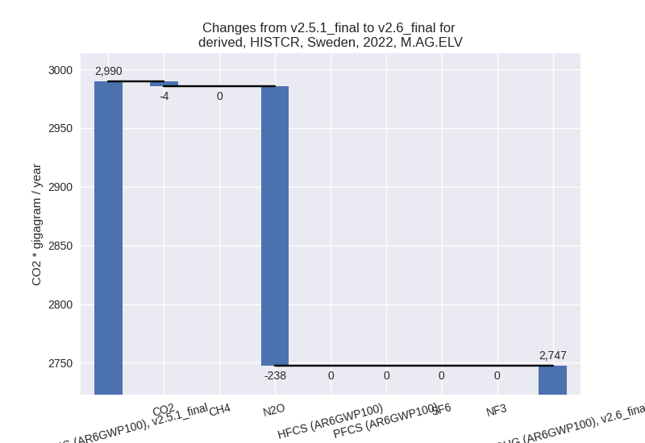
For 1990-2022 the changes per gas
are:
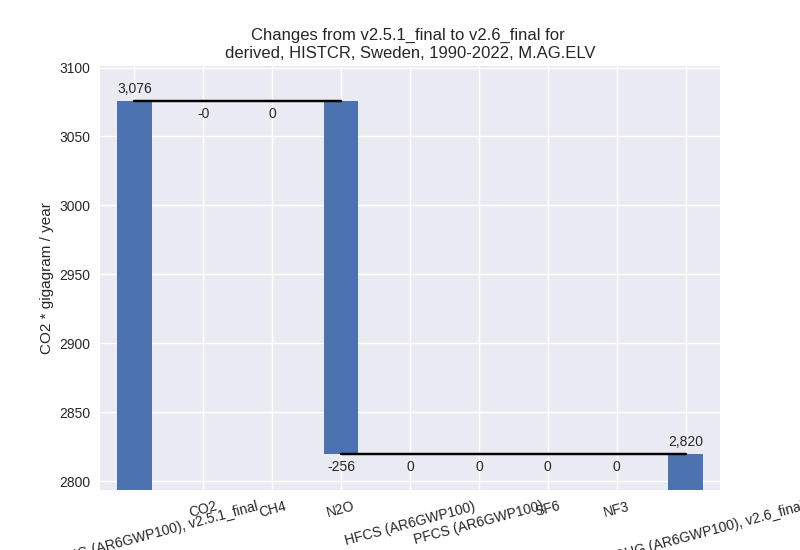
There is no subsector information available in PRIMAP-hist.
- 4: Total sectoral emissions in 2022 are 948.47 Gg
CO2 / year which is 2.1% of M.0.EL emissions. 2022 Emissions have
changed by -4.4% (-43.57 Gg CO2 /
year). 1990-2022 Emissions have changed by 0.2% (4.92 Gg CO2 / year). For 2022 the
changes per gas
are:
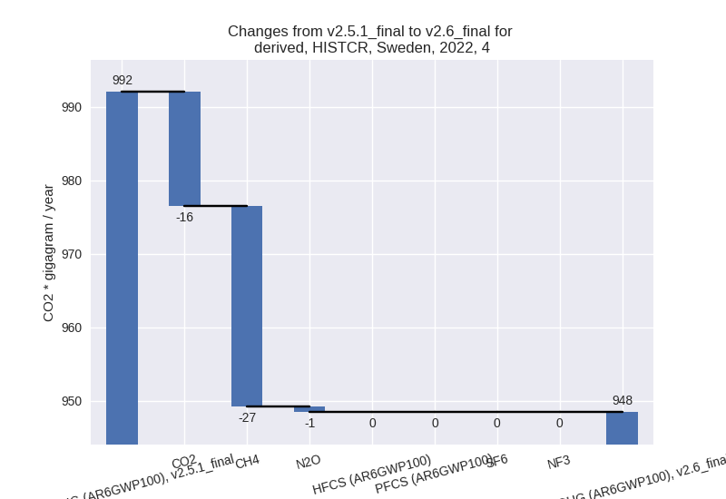
- 5: Total sectoral emissions in 2022 are 250.60 Gg
CO2 / year which is 0.5% of M.0.EL emissions. 2022 Emissions have
changed by 15.6% (33.85 Gg CO2 /
year). 1990-2022 Emissions have changed by 1.4% (5.44 Gg CO2 / year). For 2022 the
changes per gas
are:
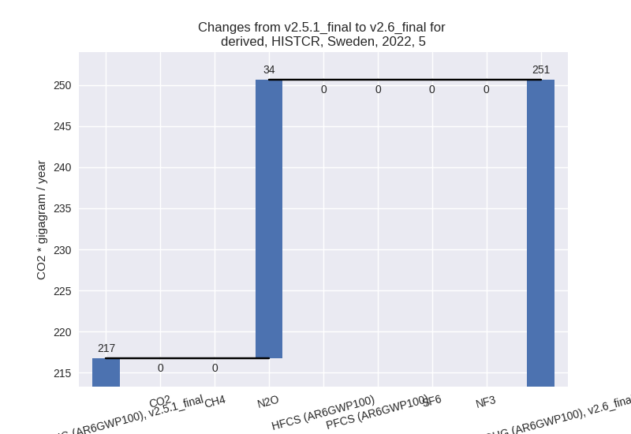
third party scenario (HISTTP):
Most important changes
per time frame
For 2022 the following sector-gas combinations have
the highest absolute impact on national total KyotoGHG (AR6GWP100)
emissions in 2022 (top 5):
- 1: 4, CH4 with 1896.83 Gg CO2 / year (31.0%)
- 2: 1.A, CO2 with 451.39 Gg CO2 / year (1.5%)
- 3: 2, PFCS (AR6GWP100) with -34.90 Gg CO2 / year (-28.0%)
- 4: 5, N2O with 33.85 Gg CO2 / year (15.6%)
- 5: 2, HFCS (AR6GWP100) with -33.80 Gg CO2 / year (-3.4%)
For 1990-2022 the following sector-gas combinations
have the highest absolute impact on national total KyotoGHG (AR6GWP100)
emissions in 1990-2022 (top 5):
- 1: 4, CH4 with 260.71 Gg CO2 / year (2.9%)
- 2: 1.A, CO2 with 131.05 Gg CO2 / year (0.3%)
- 3: 5, N2O with 5.44 Gg CO2 / year (1.4%)
- 4: 4, CO2 with 1.88 Gg CO2 / year (1.8%)
- 5: 4, N2O with 1.17 Gg CO2 / year (0.7%)
Changes in the main sectors for aggregate KyotoGHG (AR6GWP100)
are
- 1: Total sectoral emissions in 2022 are 32585.67 Gg
CO2 / year which is 55.8% of M.0.EL emissions. 2022 Emissions have
changed by 1.4% (451.38 Gg CO2 /
year). 1990-2022 Emissions have changed by 0.3% (131.05 Gg CO2 / year).
- 2: Total sectoral emissions in 2022 are 9190.70 Gg
CO2 / year which is 15.7% of M.0.EL emissions. 2022 Emissions have
changed by -0.7% (-62.56 Gg CO2 /
year). 1990-2022 Emissions have changed by 0.0% (1.42 Gg CO2 / year).
- M.AG: Total sectoral emissions in 2022 are 7983.62
Gg CO2 / year which is 13.7% of M.0.EL emissions. 2022 Emissions have
changed by 0.0% (0.00 Gg CO2 /
year). 1990-2022 Emissions have changed by 0.0% (0.00 Gg CO2 / year).
- 4: Total sectoral emissions in 2022 are 8376.26 Gg
CO2 / year which is 14.3% of M.0.EL emissions. 2022 Emissions have
changed by 29.8% (1921.29 Gg CO2 /
year). 1990-2022 Emissions have changed by 2.9% (263.76 Gg CO2 / year). For 2022 the
changes per gas
are:
For 1990-2022 the changes per gas
are:
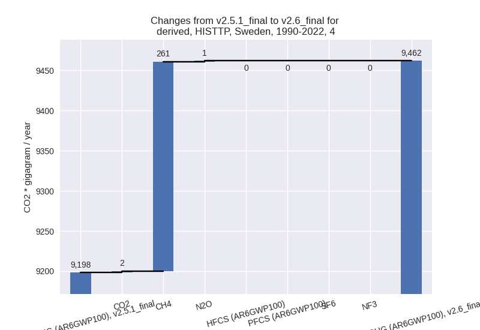
- 5: Total sectoral emissions in 2022 are 250.60 Gg
CO2 / year which is 0.4% of M.0.EL emissions. 2022 Emissions have
changed by 15.6% (33.85 Gg CO2 /
year). 1990-2022 Emissions have changed by 1.4% (5.44 Gg CO2 / year). For 2022 the
changes per gas
are: